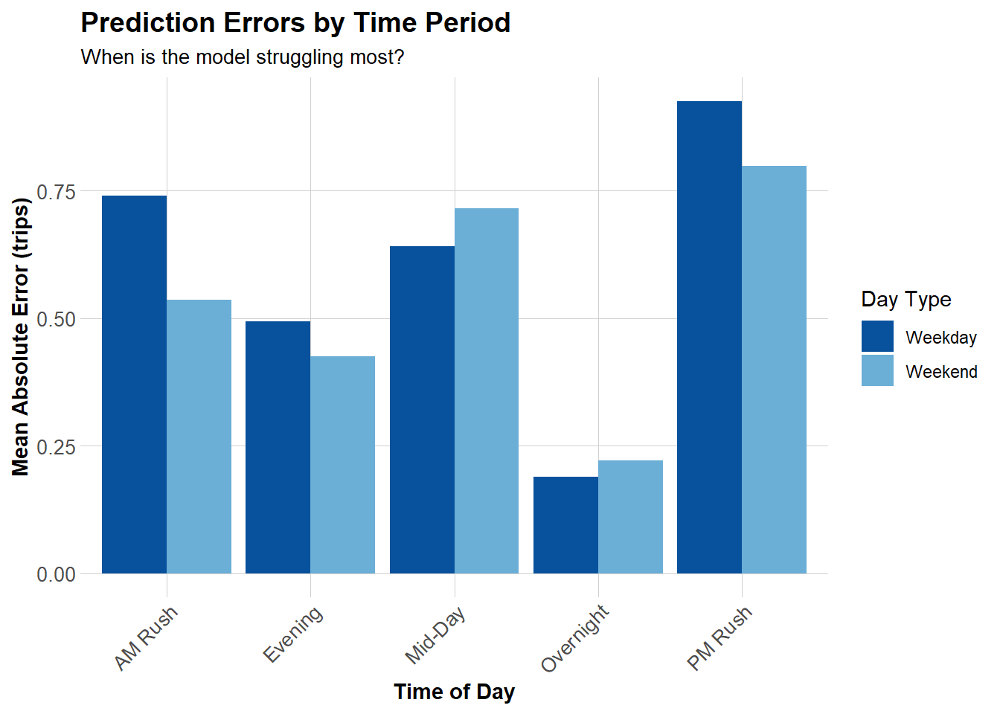

# save path to data filespath <-"./data/indego-trips/"# load all trip csvs for the four quartersindego <-lapply(list.files(path, full.names = T),function(x) { data <-read_csv(file = x, show_col_types = F) data <- data %>%mutate(quarter =sub(".*-(q[0-9])\\.csv$", "\\1", x))return(data) } ) %>%do.call(rbind, .)original_trip_total <-nrow(indego)
From past experience working with Indego bikeshare data and referencing the active station table from their data portal (link), there are many trips that are logged as starting/ending at what’s known as a virtual station, which “is used by staff to check in or check out a bike remotely for a special event or in a situation in which a bike could not otherwise be checked in or out to a station.” These types of trips are edge cases and do not have associated spatial coordinates to associate them with a station point, making them useless for a spatial analysis. The below code checks for this pattern and eliminates those trips from the dataset.
Check Virtual Stations
Code
# identify where NAs are coming from in the datasetna_counts <-colSums((is.na(indego)))na_counts[na_counts >0] %>%as.data.frame() %>%kable(col.names =c("Column", "Count"))
Column
Count
start_lat
93
start_lon
93
end_lat
21562
end_lon
21562
Code
# Confirm that station ID 3000 is always associated with NAs for lat/lonstation_3000 <- indego %>%filter((start_station ==3000| end_station ==3000))cat("Count of Station ID 3000 Trips",nrow(station_3000))
Count of Station ID 3000 Trips 21768
The vast majority of NA coordinates for station 3000 confirms that this is primarily a method for Indego to check abandoned or improperly docked bikes back into the system. Therefore, all trips that involve station 3000 will be removed from the dataset.
Code
# filter out trips starting or ending from station ID 3000indego <- indego %>%filter(start_station !=3000& end_station !=3000)cat("Cumulative Percent of Entries Removed: ",round((1-(nrow(indego)/original_trip_total))*100, 2), "%\n\n",sep ="")
Cumulative Percent of Entries Removed: 1.48%
Code
# check for nas across all columns within the entire datasetifelse(anyNA(indego), "NAs present", "No NAs present in the dataset")
# number of tripscat("Annual Trip Count:", nrow(indego), "\n")
Annual Trip Count: 1449210
Code
# date rangecat("Date range:", as.character(min(mdy_hm(indego$start_time))), "to", as.character(max(mdy_hm(indego$start_time))), "\n")
Date range: 2024-01-01 00:04:00 to 2025-03-31 23:48:00
Code
# unique station ids across both start and end station columnsunique_stations <-unique(c(indego$start_station, indego$end_station))cat("Unique stations:", length(unique_stations), "\n")
# summarize trip duration by weekweekly_summary <- indego %>%filter(year ==2024) %>%group_by(week, month) %>%summarise(mean_dur =mean(duration),median_dur =median(duration),min_dur =min(duration),max_dur =max(duration)) %>%pivot_longer(cols =colnames(.)[-c(1:2)], names_to ="var", values_to ="value")# create a faceted plot of summary statisticsggplot() +geom_line(data = weekly_summary, mapping =aes(x = week, y = value),color = colors[1],linewidth =1) +facet_wrap(~var, scales ="free_y") +labs(title ="Weekly Summary Statistics of Trip Duration", x ="Week (1-53)", y ="Value") +scale_x_continuous(breaks =seq(min(indego$week), max(indego$week), 4)) +theme_minimal()
Trip duration across 2024 ranged from just 1 minute to 1,440 minutes (24 hours), which likely correspond to the minimum and maximum time the bikeshare system is able to register. These trips could be the result of people removing and quickly re-docking bikes at the same station for various reasons, or people forgetting to dock or incorrectly docking their bike. This indicates that there are likely some erroneous trip logs in the data that need to be cleaned.
Mean and median duration follow the seasonal pattern of trip counts, with longer trips on average during summer weeks and shorter trips during winter weeks. Week 22 in the month of June saw the greatest mean duration of bike trips of the year at 21.6 minutes, compared to weeks 2 and 5 in January which both saw the lowest mean duration of 12.8 minutes.
Code
hist(log(indego$duration), breaks =50, col = colors[2], border = colors[4], main ="Histogram of Log Duration",xlab ="Log of Duration in Minutes",xlim =c(0,8))
Code
# x-value of the right side of distribution is roughly 5# e^5 is equal to 150, or 2.5 hours trip durationcumulative_pcts <-data.frame(hour =seq(1:24),cumulative_pct =sapply(seq(1:24), function(x){round(sum(indego$duration <= x*60)/nrow(indego)*100, 2) }))ggplot(data = cumulative_pcts) +geom_line(aes(x = hour, y = cumulative_pct), colour = colors[3],linewidth =1) +labs(title ="Cumulative Percent of Trips Within a Given Duration",x ="Duration (hrs)",y ="Cumulative Pct") +scale_x_continuous(breaks =seq(0, 24, 2)) +theme_minimal()
Indego bikeshare passes allow for unlimited 30- or 60-minute rides, but exceeding an hour in a single trip incurs a cost of 20-30 cents per minute extra. Given that bike trips with a duration less than 3 hours account for 99.5% of trips, with 99.9% of trips accounted for at 12 hours, it would be reasonable to suggest that any trip length beyond 12 hours (720 minutes) is well beyond the expected use case of Indego’s bikeshare network and should be considered an outlier.
Code
# remove trips greater than 12 hours in durationindego <- indego %>%filter(duration <720)cat("Cumulative Percent of Entries Removed: ",round((1-(nrow(indego)/original_trip_total))*100, 2), "%",sep ="")
Cumulative Percent of Entries Removed: 1.59%
Redockings
Code
# identify which trips started and ended at the same station# note that this is a sanity check, all should have trip_route_category == "Round Trip"round_trips <- indego %>%filter(start_station == end_station)table(round_trips$trip_route_category)
# simpler Empirical Cumulative Density Function (ecdf) plot used here due to lower quantity of dataecdf(round_trips_short$duration) %>%plot(main ="ECDF Plot of Round Trip Duration",xlab ="Duration (mins)",ylab ="CDF")
Code
cat("Count of Round Trips Lasting 1 Minute: ",sum(round_trips$duration ==1),"\n\nPercent of Round Trips Lasting 1 Minute: ",sum(round_trips$duration ==1)/nrow(round_trips),"\n\n1-Minute Round Trips - Percent of Original Trip Count: ",sum(round_trips$duration ==1)/original_trip_total*100,sep ="")
Count of Round Trips Lasting 1 Minute: 32726
Percent of Round Trips Lasting 1 Minute: 0.3590109
1-Minute Round Trips - Percent of Original Trip Count: 2.224778
Based on an Empirical Cumulative Density Function (ECDF) plot, round trips lasting one minute or less approximately constitute a majority (~50%) of trips lasting less than 30 minutes. This category of trip also accounts for approximately 2.2% of the original trips in the dataset. This is a significant amount of trips that could end up skewing the final model results, since bike redockings are not indicative of actual bikeshare trip behavior. Redockings can often result from rider confusion and can happen more than one minute after beginning a trip, so out of an abundance of caution all round trips less than five minutes will be removed from the dataset.
Code
# filter out round trips less than 5 minutes longindego <- indego %>%filter(!(duration <5& trip_route_category =="Round Trip"))cat("Cumulative Percent of Entries Removed: ",round((1-(nrow(indego)/original_trip_total))*100, 2), "%",sep ="")
Annual ridership peaks at the end of summer, between the months of July and October. The least number of trips occur during winter months, such as January, declining sharply between October and January while rising at a slower rate from January to April. If multiple years of bike trips were plotted, they would likely demonstrate a sinusoidal pattern, rising and falling based on the time of year.
There are some notable outlying moments of high/low trips, which could be a result of major events (major sporting events or public gatherings), unseasonable temperatures (an extremely hot summer day), etc.
Code
# Average trips by hour and day typehourly_patterns <- indego %>%group_by(hour, weekend) %>%summarize(avg_trips =n() /n_distinct(date)) %>%mutate(day_type =ifelse(weekend ==1, "Weekend", "Weekday"))ggplot(hourly_patterns, aes(x = hour, y = avg_trips, color = day_type)) +geom_line(linewidth =1.2) +scale_color_manual(values =c("Weekday"="#08519c", "Weekend"="#6baed6")) +labs(title ="Average Hourly Ridership Patterns",subtitle ="Clear commute patterns on weekdays",x ="Hour of Day",y ="Average Trips per Hour",color ="Day Type" ) +theme_minimal()
Peak hourly mean bikeshare usage broadly occurs during weekdays around 7-8am and 5-6pm, demonstrating a correlation with commuting hours. Meanwhile, weekend usage has no sharp peaks in usage and instead smoothly peaks around midday hours, while also displaying greater bikeshare utilization around midnight.
Code
# Most popular origin stationstop_stations <- indego %>%count(start_station, start_lat, start_lon, name ="trips") %>%arrange(desc(trips)) %>%head(20)kable(top_stations, caption ="Top 20 Indego Stations by Trip Origins",format.args =list(big.mark =",")) %>%kable_styling(bootstrap_options =c("striped", "hover"))
Top 20 Indego Stations by Trip Origins
start_station
start_lat
start_lon
trips
3,010
39.94711
-75.16618
25,163
3,032
39.94527
-75.17971
20,128
3,359
39.94888
-75.16978
17,159
3,295
39.95028
-75.16027
16,987
3,020
39.94855
-75.19007
16,142
3,066
39.94561
-75.17348
15,681
3,208
39.95048
-75.19324
15,656
3,244
39.93865
-75.16674
15,108
3,028
39.94061
-75.14958
14,939
3,054
39.96250
-75.17420
14,793
3,101
39.94295
-75.15955
14,486
3,012
39.94218
-75.17747
14,303
3,022
39.95472
-75.18323
14,259
3,362
39.94816
-75.16226
13,982
3,063
39.94633
-75.16980
13,674
3,185
39.95169
-75.15888
13,649
3,059
39.96244
-75.16121
13,559
3,052
39.94732
-75.15695
13,517
3,007
39.94517
-75.15993
13,442
3,161
39.95486
-75.18091
13,200
Load Census Data
Code
# Get Philadelphia census tractsphl_census <-get_acs(geography ="tract",variables =c("B01003_001", # Total population"B19013_001", # Median household income"B08301_001", # Total commuters"B08301_010", # Commute by transit"B02001_002", # White alone"B25077_001"# Median home value ),state ="PA",county ="Philadelphia",year =2022,geometry =TRUE,output ="wide",progress_bar = F) %>%rename(Total_Pop = B01003_001E,Med_Inc = B19013_001E,Total_Commuters = B08301_001E,Transit_Commuters = B08301_010E,White_Pop = B02001_002E,Med_Home_Value = B25077_001E ) %>%mutate(Percent_Taking_Transit = (Transit_Commuters / Total_Commuters) *100,Percent_White = (White_Pop / Total_Pop) *100 ) %>%st_transform(crs =2272)
Perform a spatial analysis to make sure all trips are within Philly to match spatial data.
Code
# create a unified philadelphia geometryphl_boundary <- phl_census %>%select(-everything()) %>%st_union() %>%st_as_sf() %>%st_transform(2272)# create stations point shapefile stn_points <- indego %>%select(start_station, start_lat, start_lon) %>%group_by(start_station) %>%slice_head(n=1) %>%st_as_sf(coords =c("start_lon", "start_lat"), crs =4326) %>%st_transform(2272) %>%cbind(in_phl =lengths(st_within(., phl_boundary)))# one station is not within the boundaries of philadelphiatable(stn_points$in_phl)
0 1
1 282
Code
# identify the id number of the station outside phillynon_phl_station <- stn_points[stn_points$in_phl ==0, "start_station"] %>%st_drop_geometry() %>%as.numeric()# filter out trips to/from this stationindego <- indego %>%filter(start_station != non_phl_station & end_station != non_phl_station)cat("Cumulative Percent of Entries Removed: ",round((1-(nrow(indego)/original_trip_total))*100, 2), "%",sep ="")
Cumulative Percent of Entries Removed: 4.29%
Code
# filter this station from the stn_points sfstn_points_filt <- stn_points %>%filter(in_phl >0)
# Map median incomeggplot() +geom_sf(data = phl_census, aes(fill = Med_Inc), color =NA) +scale_fill_viridis(option ="viridis",name ="Median\nIncome",labels = scales::dollar ) +labs(title ="Philadelphia Median Household Income by Census Tract",subtitle ="Context for understanding bike share demand patterns" ) +# Stations geom_sf(data = stn_points_filt,color ="white", size =0.25 ) +theme_void()
Median household income is not available for all census tracts. However, those that are unavailable seem to be tracts where a large concentration of commercial or industrial activity is taking place and the majority of them have no reported population. This will be explored more in the following section.
Non-residential tracts are typically located in areas of predominately commercial, business, or industrical activity. This includes several census tracts around the city such as the Northeast Airport, University City, Center City, and South Philadelphia. In total, 28 stations (10.3% of non-virtual stations within Philadelphia) were filtered out of the dataset. When filtering out trips that started or ended at these stations, the cumulative percent of trips eliminated from the dataset jumps from 4.23% to 25.8%, a massive increase in trips lost.
At the risk of predicting residential trips poorer, previously identified problem variables with a large amount of NAs such as median household income and median home value will not be included in the model as is. Instead, median household income NAs for the 28 tracts in question will be reassigned values of 0 as an indicator that they are not residential. Percent taking transit and percent white variables will also get assigned zeros, since they were calculated and NAs are a result of divide by zero errors. Other economic indicators of an area such as business density will be calculated and utilized instead to supplement these in the improved model.
Code
# select intended census variables and replace NAs across the whole dataframephl_census_select <- phl_census %>%select(GEOID, Total_Pop, Med_Inc, Percent_Taking_Transit, Percent_White) %>%mutate(., across(everything(), ~ifelse(is.na(.), 0, .)))
Load Additional Variables
Holidays
Days where bikeshare usage might be higher or lower could correspond with holidays, where people either have time off and don’t need to commute or, conversely, major events could draw a lot of people to utilize the network to access them. National holidays and observances were taken from timeanddate.com while ChatGPT was consulted to aggregate multiple festival websites and develop a list of festivals, sporting events, and concerts that took place within Philadelphia in 2024.
Code
# load holiday xlsx sheetsholidays_ntnl <-read_xlsx(path ="./data/holidays.xlsx",sheet ="national_holidays")holidays_phl <-read_xlsx(path ="./data/holidays.xlsx",sheet ="phl_events")# combine holiday dates and types into a single dataframeholidays_all <-rbind(holidays_ntnl %>%select(date, type), holidays_phl %>%select(date, type)) %>%mutate(date =as.Date(date)) %>%arrange(date) %>%distinct(date, .keep_all = T)
Weather
Comfort is an incredibly influential factor when choosing to take certain modes of transportation, and poor weather in particular can be a prominent reasons people choose to take public transportation over active transportation. Weather data will be acquired from the Philadelphia International Airport (PHL) weather station due to its proximity to Center City Philadelphia. Issues with the API call due to a corrupted CSV cell in the “metar” column for March 16th, 2024 (confirmed by directly downloading the data from Iowa Environmental Mesonet) required eliminating that variable from the call and specifying only variables that are intended to be utilized in the modeling process.
Some measurements were taken less than 1 hr apart and had the same measurements for the selected weather variables when binned to the hour (i.e. if two measurements at 12:03pm and 12:58pm had the same temperature, when binned to 12:00pm they would be duplicated). These duplicates were removed. While no hours were missing from the dataset, some rows had NA results for wind speed that were inferred from the previous hour. Several rows exist per hour (n = 11127), so mean weather conditions for each hour were then calculated for each of the 8784 hours in the year (for 2024, a leap year: 366 days * 24 hours/day = 8784 hours).
Code
# get weather data from PHL airport station from Jan 1, 2024 to Dec 31, 2024weather_data <-riem_measures(station ="PHL", # Philadelphia International Airportdate_start ="2024-01-01",date_end ="2025-04-01", data =c('tmpf', 'dwpf', 'relh', 'drct','sknt', 'p01i', 'alti', 'vsby','gust', 'wxcodes', 'feel') )# bin to the hour, replace nas, and remove duplicated rowsweather_processed <- weather_data %>%mutate(interval60 =floor_date(valid, unit ="hour"),temp = tmpf,prec =ifelse(is.na(p01i), 0, p01i),wspd = sknt,gust =ifelse(is.na(gust), 0, gust)) %>%select(interval60, temp, feel, prec, relh, wspd, gust) %>%distinct()cat("Number of records after processing:", nrow(weather_processed),"\n\nNumber of expected records:", 366*24, "\n\n")
Number of records after processing: 13576
Number of expected records: 8784
Code
# check for missing hours and interpolate values if necessaryweather_complete <- weather_processed %>%complete(interval60 =seq(min(interval60), max(interval60), by ="hour")) %>%fill(temp, feel, prec, relh, wspd, gust, .direction ="down") %>%group_by(interval60) %>%summarise(across(everything(), mean))# check summary statistics per columnsummary(weather_complete %>%select(-interval60))
temp feel prec relh
Min. :10.00 Min. : -5.65 Min. :0.000000 Min. : 16.64
1st Qu.:40.00 1st Qu.: 34.73 1st Qu.:0.000000 1st Qu.: 45.05
Median :53.00 Median : 53.00 Median :0.000000 Median : 60.19
Mean :54.79 Mean : 52.39 Mean :0.002949 Mean : 61.74
3rd Qu.:70.00 3rd Qu.: 70.00 3rd Qu.:0.000000 3rd Qu.: 78.94
Max. :98.00 Max. :107.23 Max. :0.850000 Max. :100.00
wspd gust
Min. : 0.00 Min. : 0.000
1st Qu.: 5.00 1st Qu.: 0.000
Median : 7.00 Median : 0.000
Mean : 7.84 Mean : 3.197
3rd Qu.:10.00 3rd Qu.: 0.000
Max. :32.00 Max. :55.000
Code
# precipitation has a suspiciously low median and mean, isolate and confirm zero countcat("Percent of precipitation records equal to zero:",round(sum(weather_complete$prec ==0)/nrow(weather_complete)*100, 1), "%")
Percent of precipitation records equal to zero: 87.9 %
87.9% of the hourly weather records have precipitation values equal to zero. While a heavy rainstorm would likely reduce bikeshare usage more than a slight drizzle, for the purposes of this modeling exercise something like relative humidity and wind speed would together provide an indication of the strength of a storm, while precipitation can be recoded to a dummy variable indicating whether it is raining or not.
Code
# create a recoded column indicating whether it is raining or notweather_complete <- weather_complete %>%mutate(rain =ifelse(prec >0, 1, 0) %>%as.factor())
Weather patterns are typically seasonal, with temperatures rising in the summer months and falling into winter months. Relative humidity, rain, and wind gusts do not seems to have any discernible relationship based on their line plots, but creating box plots of relative humidity and wind speed distributions based on rain conditions reveals that relative humidity is generally higher during rain events, while wind speed does not have any significant differences. Wind speed and relative humidity similarly do not correlate based on a scatter plot.
OSM Commercial Density
In lieu of median household income and median home values as economic indicators around stations in non-residential census tracts, the density of office and shop spaces in a census tract will be used to indicate the vibrancy of economic activity within them. In a city such as Philadelphia, while there may be some enclaves of single-family detached homes with higher-than-average incomes, the vast majority of high-value homes (and therefore, high-income residents) will be located closer to Center City.
Code
# import a non-exhaustive list of commercial, retail, and office businesses from OSMoffices <-opq(st_bbox(phl_boundary %>%st_transform(4326))) %>%add_osm_feature(key ="office") %>%osmdata_sf(.)shops <-opq(st_bbox(phl_boundary %>%st_transform(4326))) %>%add_osm_feature(key ="shop") %>%osmdata_sf(.)# extract points from osm object, transform to EPSG 2272, and filter to PHL boundaryoffices_pts <- offices[["osm_points"]] %>%st_transform(2272) %>%st_filter(phl_boundary, .predicate = st_within) %>%mutate(type ="office")shops_pts <- shops[["osm_points"]] %>%st_transform(2272) %>%st_filter(phl_boundary, .predicate = st_within) %>%mutate(type ="shop")# plot business locationsggplot() +geom_sf(data = phl_census, color ="grey80", fill ="grey95") +geom_sf(data = offices_pts, aes(color ="Offices"), alpha =0.25, size =0.5) +geom_sf(data = shops_pts, aes(color ="Shops"), alpha =0.25, size =0.5) +scale_color_manual(name ="Business Types", values =c("Offices"= colors[1], "Shops"= colors[2])) +labs(title ="Businesses in Philadelphia by Type") +theme_void()
Code
# combine businesses into one dataset and isolate census tract geometries/GEOIDsbusinesses <-rbind(offices_pts %>%select(osm_id, name, type), shops_pts %>%select(osm_id, name, type))phl_tracts <- phl_census %>%select(GEOID)# calculate business counts and densities per census tractbusinesses_dens <- phl_tracts %>%mutate(business_cnt =lengths(st_intersects(., businesses)),business_dens =as.numeric(business_cnt/st_area(.))*2.78784e+7)# plot business densitites spatiallyggplot() +geom_sf(data = businesses_dens,aes(fill = business_dens),color =NA) +scale_fill_viridis(name ="Business Density (#/sqmi)") +labs(title ="Census Tract Business Density in Philadelphia (2025)") +theme_void()
Business density is confirmed to be a decent metric for highlighting areas of high commercial activity in the city, with hot spots in Center City, Passyunk, Island Ave in West Philly, and multiple shopping districts in Northeast Philly.
Create Space-Time Panel for Trips
Aggregate Trips to Station-Hour Level
Code
# Count trips by station-hourtrips_panel <- indego %>%group_by(interval60, start_station, start_lat, start_lon) %>%summarize(Trip_Count =n()) %>%ungroup()# How many station-hour observations?nrow(trips_panel)
[1] 777371
Code
# How many unique stations?length(unique(trips_panel$start_station))
[1] 282
Code
# How many unique hours?length(unique(trips_panel$interval60))
[1] 10913
Create Complete Panel Structure
In order to model over time, we need to include every hour in between the start and end date of the data. This can be accomplished by figuring out how many stations are represented in the grouped dataframe of trip counts as well as the total number of hours over the time frame (1 year).
Code
# find the number of stations and hours we need to representn_stations <-length(unique(trips_panel$start_station))n_hours <-length(seq(min(trips_panel$interval60), max(trips_panel$interval60), by ="hour"))expected_rows <- n_stations * n_hourscat("Expected panel rows:", format(expected_rows, big.mark =","), "\n")
# join trip counts to expanded gridstudy_panel <-expand.grid(interval60 =seq(min(trips_panel$interval60),max(trips_panel$interval60),by ="hour"),start_station =unique(trips_panel$start_station) ) %>%left_join(., trips_panel %>%select(-c(start_lat, start_lon)),by =c("interval60", "start_station")) %>%mutate(Trip_Count =replace_na(Trip_Count, 0))# get station lat and lon columns from indego dfstn_coords <- indego %>%select(start_station, start_lat, start_lon) %>%group_by(start_station) %>%slice_head(n=1) %>%ungroup()# get the census tract each station is instn_points_filt_panel <-st_join(stn_points_filt, phl_tracts, join = st_within) %>%left_join(., stn_coords,by ="start_station") %>%select(-in_phl) %>%st_drop_geometry()# fill in station-level attributes and variablesstudy_panel <- study_panel %>%left_join(., stn_points_filt_panel,by ="start_station")
# Sort by station and timestudy_panel <- study_panel %>%arrange(start_station, interval60)# Create lag variables WITHIN each stationstudy_panel <- study_panel %>%group_by(start_station) %>%mutate(lag1Hour =lag(Trip_Count, 1),lag2Hours =lag(Trip_Count, 2),lag3Hours =lag(Trip_Count, 3),lag12Hours =lag(Trip_Count, 12),lag1day =lag(Trip_Count, 24) ) %>%ungroup()# Remove rows with NA lags (first 24 hours for each station)study_panel_complete <- study_panel %>%filter(!is.na(lag1day))cat("Rows after removing NA lags: ",format(nrow(study_panel_complete), big.mark =","), "\n\n","Percent data loss relative to original panel dataset after removing NA lags: ",round((1-nrow(study_panel_complete)/nrow(study_panel))*100, 2), "%", sep ="", "\n")
Rows after removing NA lags: 3,079,440
Percent data loss relative to original panel dataset after removing NA lags: 0.22%
Code
# isolate data from one week in a high ridership week to view lag trendsexample_station <- study_panel_complete %>%filter(start_station ==3328& week ==25)# Plot actual vs lagged demandggplot(example_station, aes(x = interval60)) +geom_line(aes(y = Trip_Count, color ="Current"), linewidth =1) +geom_line(aes(y = lag1Hour, color ="1 Hour Ago"), linewidth =1, alpha =0.7) +geom_line(aes(y = lag1day, color ="24 Hours Ago"), linewidth =1, alpha =0.7) +scale_color_manual(values =c("Current"="#08519c","1 Hour Ago"="#3182bd","24 Hours Ago"="#6baed6" )) +labs(title ="Temporal Lag Patterns at One Station",subtitle ="Past demand predicts future demand",x ="Date-Time",y ="Trip Count",color ="Time Period" ) +theme_minimal()
Regions of the plot where overlap occurs with the current (dark blue) line are where lagged demand overlaps and is a good indicator of current demand. For example, between June 19th and 20th has significant overlap between 1 hour and 24 hour lagged demand, while between June 20th and 21st, 24-hour lagged demand is not a good predictor while 1-hour lagged demand could be.
Temporal Train/Test Split
In order to train a model and have it predict for future data, the training dataset must have all its data points come from before the testing dataset in time. Since this is an annual dataset, and we want to train/test the model on an approximate 75/25 data split, we need to select all data from weeks 1-39 for the training dataset and from weeks 40-53 (one extra due to a leap year) in 2024. The trips from Q1 2025 also need to be isoolated in a separate dataset to test the model’s predictive ability and compare model statistics. In order for this to work, however, the datasets cannot have stations that only have trips in only one of them, and so all trip counts for these stations need to be filtered out.
Code
spc_2024 <- study_panel_complete %>%filter(year(interval60) ==2024)spc_2025 <- study_panel_complete %>%filter(year(interval60) ==2025)# Which stations have trips in BOTH early and late periods?early_stations <- spc_2024 %>%filter(week <40) %>%filter(Trip_Count >0) %>%distinct(start_station) %>%pull(start_station)late_stations <- spc_2024 %>%filter(week >=40) %>%filter(Trip_Count >0) %>%distinct(start_station) %>%pull(start_station)new_stations <- spc_2025 %>%filter(Trip_Count >0) %>%distinct(start_station) %>%pull(start_station)# Keep only stations that appear in BOTH periodscommon_stations <-intersect(early_stations, late_stations)# eliminate trip counts from stations that only have trips in either the train/test datastudy_panel_complete_filt <- study_panel_complete %>%filter(start_station %in% common_stations)cat("Percent data loss relative to original panel dataset after removing time-limited station counts: ",round((1-nrow(study_panel_complete_filt)/nrow(study_panel_complete))*100, 2), "%", sep ="","\n")
Percent data loss relative to original panel dataset after removing time-limited station counts: 10.64%
Training observations: 1,645,056
Testing observations: 562,464
Training date range: 2024-01-02 to 2024-09-29
Testing date range: 2024-09-30 to 2024-12-31
Building Predictive Models
This section is devoted to crafting five linear models of increasing complexity, while also exploring the addition of additional variables and conversion to a poisson regression.
Model 1 - Baseline (Time + Weather)
Code
# Set contrasts to treatment coding (dummy variables)contrasts(train$dotw_simple) <-contr.treatment(7)# Now run the modelmodel1 <-lm( Trip_Count ~as.factor(hour) + dotw_simple + temp + prec,data = train)summary(model1)
This model utilizes 0:00 (12:00am, or midnight) as the reference category for hour, with coefficients representing the relative differences in count based on whether the station is being modeled at that hour. 17:00 (5:00pm) has the greatest positive difference relative to midnight at +1.114 trips, while 04:00 (4:00am) has the greatest negative difference at -0.078 trips, indicating that midnight is an hour that does not see a lot of trips to begin with. With Monday (dotw = 1) as the reference category for days of the week, weekdays have positive coefficients while weekend days have negative coefficients, reflecting the reduction in trips that takes place over weekends on average. A 1oF increase in temperature corresponds with a 0.0098 unit increase in trips, while a 1” increase in precipitation results in a 1.11 unit decrease in trips. Every coefficient is significant except for the Friday factor variable (dotw = 5). The model’s adjusted R2 for this analysis, which will serve as a baseline value, is equal to 0.1186, indicating that 11.9% of the variation in the data can be explained by this model.
The adjusted R2 value for model 2 is 0.3388, a significant increase over the previous model. This was likely due to the addition of the lag variables, which represent the influence of past demand on future conditions (i.e. the demand at a station from 1 hour ago could be roughly equivalent to the demand at the station in the present).
The improvements in adjusted R2 after including census variables was minimal, increasing to 0.3425. Despite their statistical significance in the model, the small coefficient values for these census variables indicate that they have lesser explanatory power in the model compared to other time- and weather-based predictors.
Model 4 - Add Station Fixed Effects
Code
model4 <-lm( Trip_Count ~as.factor(hour) + dotw_simple + temp + prec + lag1Hour + lag3Hours + lag1day + Med_Inc + Percent_Taking_Transit + Percent_White +as.factor(start_station),data = train)# Summary too long with all station dummies, just show key metricscat("Model 4 R-squared:", summary(model4)$r.squared, "\n")
Slightly better improvements in adjusted R2 indicate that station fixed effects could have a meaningful influence on the model, though these small benefits might be outweighed by how computationally expensive such a model is to run.
Due to the expanded temporal range of data, the test dataset could not include all months that are represented in the train dataset. Therefore, the month predictor present in the sample code had to be removed from consideration for this analysis.
This model proves to not be much of an improvement (Adjusted R2 = 0.367 in model 5, compared to 0.364 in model 4). It may be reasonable to leave this interaction term between the rush hour and weekend dummy variables in the model, however, since it controls for a specific phenomenon that has a strong theoretical backing (rush hour effects on bikeshare usage are not present on the weekends).
Model 6 - Backtracking: Additional Variables
To discern the potential influence of additional variables, model 6 will be an enhancement of model 3, prior to the addition of station fixed effects that make the model summary table difficult to parse.
The additional variables (and some variable substitutions) are as follows:
Business Density (business_dens) - the density of shops and offices of various types per square mile
Wind Speed (wspd) - windier days make cycling more difficult, and will likely push people to other modes.
Raining Indicator (rain) - substitution for precipitation, since any amount of rain in the day’s forecast will likely coincide with a significant reduction in bikeshare usage as people choose alternative modes.
Event Type (holiday) - as previously discussed, holidays could drastically reduce cycling usage as less people are commuting, while other events such as festivals and sporting events could increase it as people choose it to bypass crowded public transit or congested roads. This variable was converted to a factor to analyze the effect of each event type.
Unfortunately, the results of adding additional variables to model 3 did not result in a strong increase in model performance, according to R2 values (model 6 R2 = 0.3437, model 3 R2 = 0.3425). The rain indicator variable, which was theorized to be an improvement on the continuous precipitation variable, had a significantly reduced coefficient value (model 6 “rain” estimate = -0.096, model 3 “prec” estimate = -0.57), though both are significant. The holiday variables demonstrated some predictive value, though the coefficient for concert dates was not a significant predictor (p = 0.54).
# Get predictions on test set# Set contrasts to treatment coding (dummy variables)contrasts(test$dotw_simple) <-contr.treatment(7)test <- test %>%mutate(pred1 =predict(model1, newdata = test),pred2 =predict(model2, newdata = test),pred3 =predict(model3, newdata = test),pred4 =predict(model4, newdata = test),pred5 =predict(model5, newdata = test),pred6 =predict(model6, newdata = test),pred7 =predict(model7, newdata = test) )spc_2025_filt <- spc_2025_filt %>%mutate(pred2 =predict(model2, newdata = spc_2025_filt),pred6 =predict(model6, newdata = spc_2025_filt) )# Calculate MAE for each modelmae_results <-data.frame(Model =c("1. Time + Weather","2. + Temporal Lags","3. + Demographics","4. + Station FE","5. + Rush Hour Interaction","6. Model 3 + Additional Variables","7. Poisson Regression of Model 6 Formula","8. Predicting for Q1 2025 - Model 2","9. Predicting for Q1 2025 - Model 6" ),MAE =c(mean(abs(test$Trip_Count - test$pred1), na.rm =TRUE),mean(abs(test$Trip_Count - test$pred2), na.rm =TRUE),mean(abs(test$Trip_Count - test$pred3), na.rm =TRUE),mean(abs(test$Trip_Count - test$pred4), na.rm =TRUE),mean(abs(test$Trip_Count - test$pred5), na.rm =TRUE),mean(abs(test$Trip_Count - test$pred6), na.rm =TRUE),mean(abs(test$Trip_Count - test$pred7), na.rm =TRUE),mean(abs(spc_2025_filt$Trip_Count - spc_2025_filt$pred2), na.rm =TRUE),mean(abs(spc_2025_filt$Trip_Count - spc_2025_filt$pred6), na.rm =TRUE) ))kable(mae_results, digits =2,caption ="Mean Absolute Error by Model (Test Set)",col.names =c("Model", "MAE (trips)")) %>%kable_styling(bootstrap_options =c("striped", "hover"))
Mean Absolute Error by Model (Test Set)
Model
MAE (trips)
1. Time + Weather
0.63
2. + Temporal Lags
0.53
3. + Demographics
0.53
4. + Station FE
0.54
5. + Rush Hour Interaction
0.54
6. Model 3 + Additional Variables
0.53
7. Poisson Regression of Model 6 Formula
1.80
8. Predicting for Q1 2025 - Model 2
0.42
9. Predicting for Q1 2025 - Model 6
0.43
Code
# check MAE for Q1 2025
For 2024-data-based predictions, the poisson regression model immediately emerges as the worst in terms of Mean Absolute Error (MAE), which is likely due to the assumption of poisson regressions that the mean of the distribution equals its variance. This is not true for bikeshare trip counts, where the median and mean are close to zero but the dataset fluctuates significantly over time. The introduction of temporal lags in model 2 represent the greatest reduction in MAE across all linear model iterations. The addition of station fixed effects slightly increased MAE, highlighting how introducing complexity into the model, while increasing R2, might be a detriment to the model overall.
Model 6 (model 3 + additional variables) was chosen as the model to predict for Q1 2025 and compare to model 2, the final model generated from the original procedure. The MAE values for both model 2 and model 6 were lower than when analyzing their respective predictions from the test dataset for 2024. It is possible that this could be a result of the limited time frame that the 2025 data represents (544,320 rows), which reduces the sample size of errors compared to the 2024 MAE values (2,207,520 rows). If either model better at predicting for late winter/early spring months due to data availability patterns that were not explored in this report, then this will be reflected in performing better for just those isolated months for 2025.
Space-Time Error Analysis
Observed vs. Predicted
Code
test <- test %>%mutate(error = Trip_Count - pred2,abs_error =abs(error),time_of_day =case_when( hour <7~"Overnight", hour >=7& hour <10~"AM Rush", hour >=10& hour <15~"Mid-Day", hour >=15& hour <=18~"PM Rush", hour >18~"Evening" ) )# Scatter plot by time and day typeggplot(test, aes(x = Trip_Count, y = pred2)) +geom_point(alpha =0.2, color ="#3182bd") +geom_abline(slope =1, intercept =0, color ="red", linewidth =1) +geom_smooth(method ="lm", se =FALSE, color ="darkgreen") +facet_grid(weekend ~ time_of_day) +labs(title ="Observed vs. Predicted Bike Trips",subtitle ="Model 2 performance by time period",x ="Observed Trips",y ="Predicted Trips",caption ="Red line = perfect predictions; Green line = actual model fit" ) +theme_void()
Model 2 performs best for PM Rush and Evening hours, and generally better for weekdays when compared to weekends. It tends to predict worse for AM Rush and Mid-Day trips.
Clusters of high MAE values occur towards Center City, where the average demand is greater. This is likely influenced by the large number of zeros within the dataset preventing the clean estimation of the much higher ridership stations in Center City.
Temporal Error Patterns
Code
# MAE by time of day and day typetemporal_errors <- test %>%group_by(time_of_day, weekend) %>%summarize(MAE =mean(abs_error, na.rm =TRUE),.groups ="drop" ) %>%mutate(day_type =ifelse(weekend ==1, "Weekend", "Weekday"))ggplot(temporal_errors, aes(x = time_of_day, y = MAE, fill = day_type)) +geom_col(position ="dodge") +scale_fill_manual(values =c("Weekday"="#08519c", "Weekend"="#6baed6")) +labs(title ="Prediction Errors by Time Period",subtitle ="When is the model struggling most?",x ="Time of Day",y ="Mean Absolute Error (trips)",fill ="Day Type" ) + plotTheme +theme(axis.text.x =element_text(angle =45, hjust =1))

For the AM Rush, Evening, and PM Rush times during weekdays, model 2 has a higher MAE value. The same is true Mid-Day and Overnight times during weekends. Overnight times have the lowest MAE of all time periods, which is also likely due to the high amount of zeros present in the data (late nights have the least number of trips on average).
Error and Demographic Distributions
Code
# Join demographic data to station errorsstation_errors_demo <- station_errors %>%left_join(stn_points_filt_panel %>%select(start_station, GEOID),by ="start_station") %>%left_join(phl_census_select %>%select(GEOID, Med_Inc, Percent_Taking_Transit, Percent_White), by ="GEOID") %>%filter(!is.na(Med_Inc))# Create plotsp1 <-ggplot(station_errors_demo, aes(x = Med_Inc, y = MAE)) +geom_point(alpha =0.5, color ="#3182bd") +geom_smooth(method ="lm", se =FALSE, color ="red") +scale_x_continuous(labels = scales::dollar) +labs(title ="Errors vs. Median Income", x ="Median Income", y ="MAE") + plotThemep2 <-ggplot(station_errors_demo, aes(x = Percent_Taking_Transit, y = MAE)) +geom_point(alpha =0.5, color ="#3182bd") +geom_smooth(method ="lm", se =FALSE, color ="red") +labs(title ="Errors vs. Transit Usage", x ="% Taking Transit", y ="MAE") + plotThemep3 <-ggplot(station_errors_demo, aes(x = Percent_White, y = MAE)) +geom_point(alpha =0.5, color ="#3182bd") +geom_smooth(method ="lm", se =FALSE, color ="red") +labs(title ="Errors vs. Race", x ="% White", y ="MAE") + plotThemegrid.arrange(p1, p2, p3, ncol =2)
While there are some trends when considering MAEs vs. demographic variables, it’s important to keep in mind that, for the most part, these relationships are very slight. For median income and percent white, high values of both tended to result in higher errors, while for stations in census tracts with lower percentages of transit users error tended to decrease.
Final Report
In general, these models - if used at all - should be used with extreme caution. A low adjusted R2 value of 0.3388 combined with relatively high MAE values of 0.53 for the top model (model 2) indicate that this model does not explain the vast majority of the existing data, nor does it predict particularly well on average. System rebalancing of the Indego bikeshare network requires accurate knowledge of where demand is highest and where supply of bikes is weakest. Prediction errors when modeling these aspects of the network would result in an incorrect distribution of bikes throughout the network. If this produces a particularly bad use experience for bikeshare users, this could push people away from utilizing the system.
Prediction errors are loosely worse in areas with lower bikeshare usage, which here are most clearly represented as affluent, white neighborhoods that likely use other modes of transportation more frequently. This is supported by the analysis of spatial errors performed, highlighting increased prediction errors in Center City, a far more affluent and white-dominant area of the Philadelphia. Given that Indego is notoriously bad at expanding into majority-black regions of Philadelphia, and therefore this model has a deficit of input data from those communities, it’s highly likely that they are also being incorrectly modeled. This could worsen bikeshare access disparities by focusing resources in locations that wouldn’t even use bikeshare if they had access to it, while ignoring communities that could benefit from increased bikeshare access much more. A future safeguard could include weighting any models to give more emphasis to stations in or near these communities (adding a spatial lag variable to accomplish this).